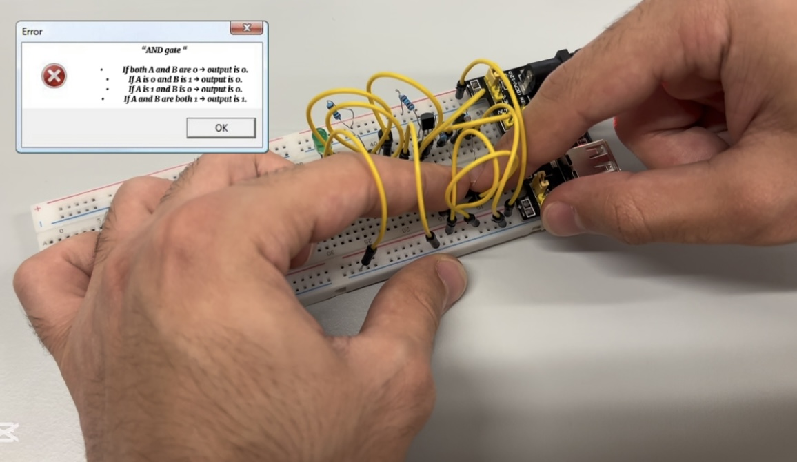
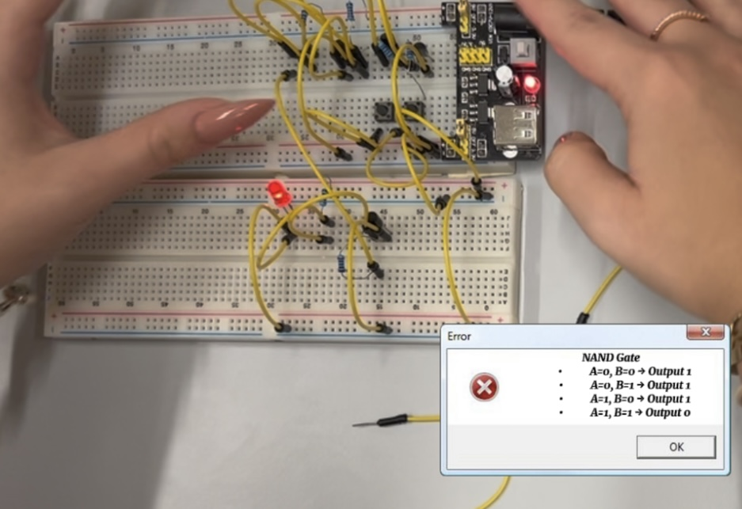
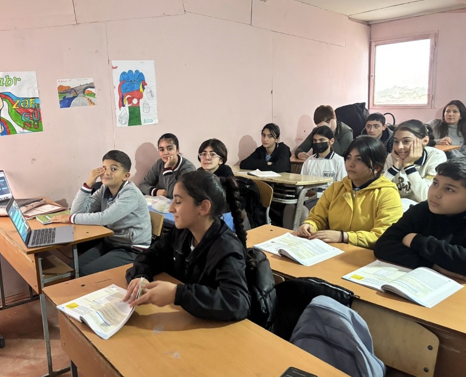
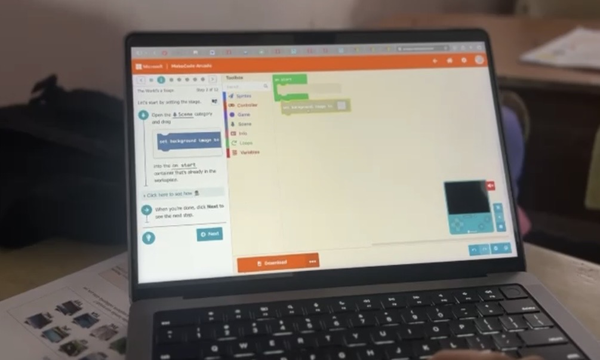
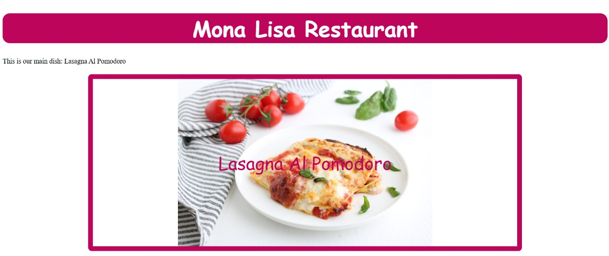
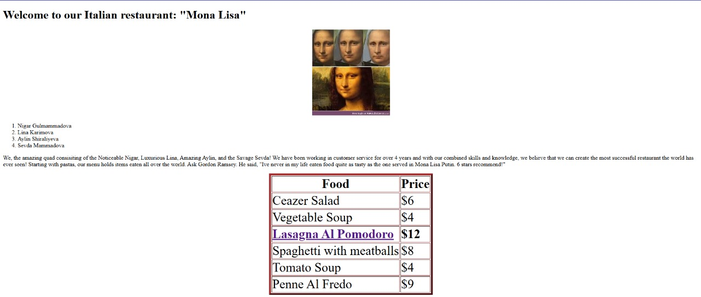

My Projects
Project 1: Logic Gates Using Kit Boxes
 In this project, I designed and built AND, OR, NOT, and NAND logic gates using a kit box, allowing me to explore the fundamental principles of digital electronics. I carefully assembled each gate, connecting inputs and outputs to observe how signals propagate through the circuits. By visualizing and testing the behavior of each gate, I gained a deep understanding of logical operations, signal flow, and how basic components combine to form complex circuits. This project not only strengthened my technical skills but also influenced my problem-solving and critical thinking abilities.
Project 2: Hour of Code - Bug Arena
 As part of the Hour of Code , I visited School 56 in Kalbajar rayon to introduce students to basic coding concepts using the Bug Arena project. During these sessions, I guided students step by step, explaining how to play and interact with the Bug Arena environment. This gamified approach made learning programming engaging and fun, helping students develop debugging skills, logical thinking, and problem-solving abilities. By seeing their excitement and curiosity, I was able to get a positive learning experience that encouraged creativity and confidence in coding at an early stage.
Project 3: Web-site Design
 I created a website for Italian Restaurant "Mona Lisa" using HTML and CSS with my friend Sevda, combining visual aesthetics with interactive elements to engage visitors. The site showcases my ability to translate creative ideas into a functional digital experience, blending design principles with web development skills. From layout and typography to images and color schemes, I carefully crafted the web-site to attract more people to this restaurant.